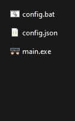
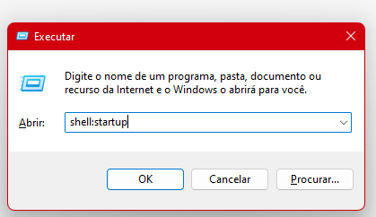

📌 O que este programa faz?
Este programa permite que você:
- Bloqueie uma tecla que está com defeito
- Troque uma tecla por outra (remapear)
- Salvar as configurações automaticamente
💡 Exemplo
Se a tecla F ou outra está quebrada ou nome conhecido como
Telca Fantasma
Não sabe oque é tecla Fantasma: Saiba mais aqui
→ Você pode bloquear ela
→ E usar outra tecla no lugar
⬇ Download
Resolva sua tecla fantasma em segundos
⚙️ Como usar
- Arquivos dentro da pasta ZIP
- Extraia a pasta ZIP
- ANTES DE ABRIR: veja a parte sobre antivírus abaixo
- Abra o arquivo start.bat
- Escolha as teclas e clique em Aplicar

📄 O que é o arquivo start.bat?
O arquivo start.bat é apenas um iniciador automático do programa.
Ele serve para:
- Abrir o programa corretamente
- Garantir que funcione mesmo sem instalar nada
- Facilitar para quem não entende de computador
👉 Você só precisa dar dois cliques nele para usar o programa.
🛡️ Antivírus (Muito importante)
Por isso, alguns antivírus podem bloquear ou avisar como suspeito.
Isso é normal.
Para evitar problemas, faça isso ANTES de abrir o start.bat:
- Abra a Segurança do Windows
- Vá em Proteção contra vírus e ameaças
- Clique em Gerenciar configurações
- Procure por Exclusões
- Adicione a pasta do programa
❓ O start.bat faz isso automaticamente?
❌ Não.
O arquivo start.bat NÃO altera o antivírus.
Ele apenas colocar o progama em uma pasta que inicia progamas automaticamente
como conferir isso:
Precione a tecla (windows + r) devera aparecer uma imagem igual a iamgen abaixo
Escreva:
Shell: startup e precione Enter

.👉 Por segurança, você mesmo deve adicionar a exceção no antivírus.
💡 Dica importante
Após configurar tudo, você pode usar normalmente.
Recomendado: executar como Administrador para melhor funcionamento.